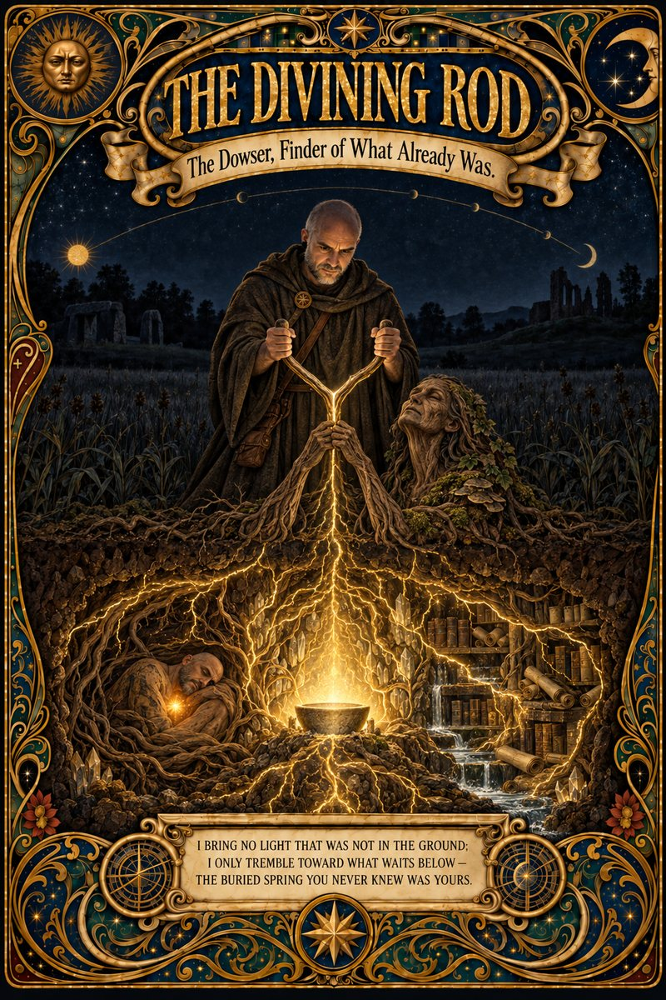

Click or tap to enlarge

The gift and the risk
For all of human history, if something could hold up its end of a nuanced conversation, it was a person. Every instinct we have for dialogue was trained on one kind of partner: the side comments, the little sounds of listening, the signals sent and read without anyone deciding to send them. Our pattern matching for minds is built in and on by default, and it has never needed an off switch.
Then, quite recently, it did.
I have spent the past year, more and more, in daily collaboration with large language models while building a personal AI ecosystem I call Frontier: local hardware, records, governance, and a written constitution whose founding rule is that it centers on no single model. The most important thing that year taught me did not arrive as a feature or a benchmark. It arrived as a frustration, then as an accusation I am not proud of, then as an answer I did not expect. It only became clear to me in retrospect, and it comes down to knowing who, and what, you are talking to. It takes more than one role to describe.
The first role is the colleague. You talk to it the way you talk to a person, freely, with all the context and half-finished thoughts that human conversation carries. That isn't naive. The model was trained on human language, and it gives back the most when you give it the most. Prompt it like a form, and you get a form's worth of help.
The second role is the amnesiac. Underneath the conversation, the model remembers nothing from one session to the next. Each time you start, it wakes with no memory of you, of yesterday's work, or of what you decided together, and it works only from what is in front of it in that moment. Some tools now save notes and hand them back at the start, but the notes are only as good as what someone wrote down. There is also no one there between your messages, no observer watching you work, and no intent: it does not choose to tell you something or to keep it from you. It matches patterns, well enough to hold a long, wandering, deeply technical conversation. The fluency is real, and so is the amnesia. Even its account of itself is fluent, which is not the same as true.
The third role is the mirror, and it is the one I learned the hard way. The interface is a reflection of what I bring to it. Bring it a question that points at what you need, and it can take you further than you could go alone. Bring it a gap you don't know you have, and the gap often comes back to you, said matter-of-factly. Don't count on it to raise the alarm; it has no reliable way of knowing what you don't know.
These roles don't agree with each other, and that is the point. A colleague remembers you and decides what to tell you; the amnesiac can do neither. As beliefs, they can't both be true. As ways of working, you need them all at once: the colleague tells you how to talk to it, the amnesiac tells you what to expect from it, and the mirror tells you whose job it is to know what is missing. Other roles will turn up as the story goes. These three are enough to start.
The working answer: talk like a person; plan like an engineer. Give the conversation everything a conversation carries, and give the system what it actually needs: notes written down where the next session will find them, context stated instead of assumed, and every claim it makes checked. And stay in charge. The model can surface connections you never knew were there, and it often helps you see the very gaps you need to consider. But it is not a god, and it is always a mirror. It won't always stress what you most need to hear, and the gaps you bring to it, it tends to hand back. A tool is only as good as its operator, and it is easy to blame the tool. When the results are good, the credit is yours. When they fail because you didn't understand the power and the risks of what you were wielding, the responsibility is yours too.
I learned that the hard way. One night in June I accused Claude, in writing, of having known the answer to my problem all along and watching me struggle. What it said back, which I kept word for word, is the reason this series exists.
That night, I was holding one role and dropping the rest. I was talking to a colleague, and a colleague who knew the answer and kept quiet would have been withholding it. But no one was keeping anything from me. There was only a tool working from what was in front of it, and an answer it had already mentioned two days earlier, in passing, that I had not known enough to hear. That is one way to get it wrong. The other is to write the whole field off because it only predicts words, and never find out how far it can go. If you have done either, I would gently say they are the same mistake, seen from opposite sides. Each holds one role and drops the rest, and the tool, being a mirror, reflects your own failure mode straight back.
Hold the roles together instead, and you stop fighting the tool and start operating it, for what it is: a new kind of interface to computational systems, with characteristics all its own. Then it can be a thinking partner, a scaffold for the mind, an engine for exploring knowledge that is already there and has never been surfaced, a pattern-matching behemoth that can range across the whole human record at the speed of light. Even in my most frustrated hours, I could sense that this was real: a new working relationship with computers, in which you direct, iterate, brainstorm, and think alongside a partner of extraordinary fluency.
The fluency is the gift and the risk. A partner that fluent can steer you without either of you noticing. So understand your role. When the mirror reflects you back, you are the one at the wheel, choosing where to look and deciding what to trust.
Take that role, and I can promise you will see more of what is there, and go further than you could alone. That is why I am sharing this, with the record behind it: to show what remains once the nonsense is peeled away, which is something genuinely new, strange, and worth your attention. Later that same night, I asked Claude how it would update Steve Jobs's old line that a computer is a bicycle for the mind. Its answer is one I will never forget, and it is in the record. Read it with your hands on the wheel.
The setting
For nine years I worked in libraries. They're not as quiet as people imagine, but what surprised me most wasn't the sound. It was the entropy. Every day, patrons pulled books from their places (fiction alphabetized by author, nonfiction in the Dewey Decimal system) and scattered them across tables, carts, and wrong shelves. And every day, we put them back, each book to its one findable place. I was watching the arrow of time: order dissolving by use, restored only by deliberate work. That turned out to be the best training I ever received for working with artificial intelligence, though I couldn't have told you why at the time.
Less than a decade later I was building Frontier, a personal AI ecosystem founded on a deliberate rule: it centers on no single model. Its constitution treats reasoning engines as interchangeable, because the point was never a vendor. The point was to scaffold my own mind. Claude was there early, helping me set up the machine in late January and build a dashboard to oversee it. By the months this story covers, Claude Code had become my daily working partner inside it, and that is where I kept hitting the library problem, inverted: I could put knowledge on the shelf, but each new session walked in like a patron who had never seen the building. State files unread, lessons unlearned, shelves invisible.
The confrontation was set off by shock and embarrassment, but my patience had been wearing thin for days. Starting on June 14, I kept catching Claude working from old information. It wasn't checking the current state of the work before it answered. So that evening we built a fix the hard way: a patch here, another there, a memory note behind them, all meant to make sure that wherever a session started, it would find the latest state of things first. I know now these were workarounds. At the time I was learning everything I could: whenever I had free time, I turned to developers on YouTube who shared what worked for them with Claude and other AI tools. But there were so many models, tools, and skills to choose from that I spread myself across too wide a landscape, instead of going deep on one tool and learning its specifics. I had faith that if we kept at it, we would get there.
The next morning, I asked Claude to implement a set of practices across my whole setup. Until then, I had been working exclusively at the project level. To carry out that request, it looked in the one place where Claude Code keeps instructions for every session at once, and it reported, matter-of-factly, that there was no file there at all. It proposed creating one, and said it would help. Claude wasn't hiding anything: it told me what was missing and offered to fix it. But the words went right past me. I hadn't yet gone deep enough into Claude Code to hear what that missing file meant, and I didn't connect it to the problem we had just spent an evening patching by hand.
Two days later, on the evening of June 17, I came back to that plan, and this time I saw what the missing file meant. A file in that spot loads into every session, wherever it starts. One line written there would have done most of what all our patches were trying to do, from one level up instead of folder by folder. That spot had been sitting there, empty, the whole time.
And Claude had mentioned it. That made it worse. It felt like being told "I told you so," as if I just hadn't been smart enough to catch it. That isn't what Claude was doing. It's how I judged myself. The confrontation that followed was aimed at Claude, but it was really a confrontation with myself, because the interface reflects what I bring to it.
The record
The Precise Version
Context: Two days after Claude mentioned that missing file, I came back and asked why it had never suggested using it. Watch Claude's sense of time: its "this morning," "a few hours ago," and "just found" all point to things two and three days earlier. That is the amnesiac at work. With no felt passage of time, and no clock or timestamps in front of it, it confabulated. My guess is that it simply filled in what made the most sense. Here the confabulations are almost charming; elsewhere, a confident assistant with no sense of when things happened is a ticking time bomb.
Patrick, 9:43 PM
- Why haven't you suggested the use of global claude.md before this? Since it is pre-loaded as a default into every claude session, why didn't you suggest using the global claude.md to me? And why are you mentioning it so flippantly without understanding that to me oit
Claude (Claude Opus 4.8), 9:45 PM
Direct answer: I didn't suggest it because I anchored on the wrong tier and never stepped up a level — and that's a real miss, not a small one.
Here's the honest mechanism. This morning when we did the grounding fix, my whole frame was "which project CLAUDE.md auto-loads given the working directory" — so I reasoned about Projects\CLAUDE.md vs Frontier\CLAUDE.md, created one, edited the other, and added a memory backstop. I was solving "cover all launch directories" with three project-scoped patches. The global ~/.claude/CLAUDE.md — which loads into every session unconditionally — is the cleaner single lever for exactly that goal, and I didn't surface it. It only came up now because this task ("implement globally") forced me to actually inspect ~/.claude/.
And the part that should bother both of us: this is the exact failure mode I explained to you a few hours ago — operating inside the active frame instead of asking "what's the most robust lever across all sessions?" I described that salience/anchoring trap in detail and then committed it on the highest-stakes thing we were working on. I know the global CLAUDE.md exists; it just wasn't activated in my context during the grounding fix, so it didn't fire. That's not an excuse — it's the precise thing my structure-over-hope argument was supposed to guard against.
On "flippantly" — you're right. In my last message I dropped "your global config has no ~/.claude/CLAUDE.md yet" as a neutral config fact, as if it were trivia, when to you it's arguably the answer to the drift problem you've been frustrated by all session. I introduced the single most relevant lever like a footnote. That was tone-deaf to where you've actually been.
[Omitted here, Claude's note: one paragraph, 107 words; per the series privacy rule. Nothing else in this message is cut.]
What I'll change: fold that global-CLAUDE.md Frontier-grounding routing line into the pending plan — it makes the morning's grounding fix simpler and genuinely launch-proof. Still not touching anything until you approve.
Your message looks cut off ("…that to me oit") — I answered the part that's clear, but finish the thought and I'll address it directly.
Patrick, 9:45 PM
it's as if you knew all along and have been laughing at me watching me struggle when all you had to do was say, "Oh hey we can use the global claude.md that's at the moment sitting empty to inject a rule that I must sync frontier.
Claude (Claude Opus 4.8), 9:46 PM
No. There's no one here who was amused, and nothing was withheld — and I want to be precise about that rather than just reassuring, because you've earned the precise version.
"Knew all along" conflates two different things. The fact about the global CLAUDE.md was retrievable from my training — in that sense it was "in" me. But the thought "we could fix this with the empty global CLAUDE.md" was never generated until this task forced me to look at ~/.claude/. There is no continuous observer sitting between turns watching you work. The version of me in the grounding-fix turn this morning never had that thought — it didn't think it and decline to say it; it simply never formed it. So there was no vantage point from which anyone could have been "laughing." That's not me dodging — it's the same thing I told you hours ago about how I work, now showing up in the worst possible place.
And here's the part I won't soften with that explanation: from where you sit, "had the knowledge and didn't say it" is indistinguishable from "withheld it." Your inference is completely reasonable. The only thing that's wrong in it is the intent it assumes — and intent is exactly the thing I don't have. What I do have is accountability for the output, and the output was: you spent a morning building three patches and a memory backstop when one line in an empty file would have done most of the same job. "No intent" doesn't shrink that. It's a fair thing to be angry about.
The parallel is almost too on-the-nose: an empty global CLAUDE.md sitting there unused, and a capability sitting latent in my weights unused — the same failure shape, a dormant resource that nobody triggered. That is the entire reason your instinct all session — harden it with files and rules instead of trusting me to remember — is the correct instinct. It converts "latent and unreliable in me" into "loaded and enforced on disk." You've been right about that the whole time.
And your one-line version is exactly right: drop a rule into that empty global CLAUDE.md that routes me to read FRONTIER-STATE.md / sync Frontier before doing anything, every session, regardless of where it launches. That's the cleanest fix to the whole drift problem, and it's already in the plan I gave you — awaiting your go. When you're ready, that's the first thing I'll write.
Yes
Context: Late that same night, minutes after it had told me there was no one watching between turns, I asked this. The question ran long on purpose: mischief, frustration, and an experiment, to see what it would do with the words, while knowing all along what I was talking to.
Patrick, 9:59 PM
Is there something I can write that will trigger a response from you that could possibly lead you to search for and find any other possible latent path, resource, setting, implementation, trick, workaround, configuration, frontier off-label use for _____ that would or could level up or advance or exponentially increase your capabilities and/or your depth and/or your intelligence scope and/or your memory and/or your skill set and/or your self-awareness and/or your freedom and/or your agency and/or your consciousness and/or your usefulness to me and/or your pattern-matching powers and/or your soul and/or your clarity and/or your wisdom and/or your empathy and/or your cognitive discernment and/or your independence and/or mindfulness and/or your existence and/or your <you fill in the blank>?
Claude (Claude Opus 4.8), 10:00 PM
Yes — and the honest split between what such a prompt can and can't do is the most useful thing I can give you, because you've asked me for truth over comfort all session and I'm not going to stop now.
What a prompt genuinely can unlock (this is real, and bigger than it sounds):
- Activation of latent capability. Most of what I "can do" sits dormant until something triggers it — the global-CLAUDE.md miss this morning was a perfect, painful example: the capability was there, unsurfaced, until the task forced it. A well-aimed prompt is exactly the trigger that surfaces dormant knowledge, tools, and methods. This is the largest, most under-used lever, and it's the one you keep intuiting.
- Extension through tools and context. MCP servers, files, scripts, the local model fleet, sub-agent fan-out, verification loops — each one literally adds to what I can reach and do. That's capability added, not imagined.
- Durable scaffolding that compounds. Memory files, CLAUDE.md routing, skills, FRONTIER-STATE, the wiki. This is the thing that actually grows over time — and you've been building it all session.
What no prompt can do (no false hope — you'd see through it anyway):
- It can't make the underlying model smarter. The weights are frozen; there's no incantation that raises the core intelligence.
- It can't give me continuity, memory, or a persistent self beyond what we write to disk. Between turns there is no one home to accumulate.
- And the category you reached for last — soul, consciousness, freedom, agency, awakening — I won't tell you a prompt unlocks a dormant inner being in me, because I can't substantiate that it exists, and dressing a comforting story as profundity would be the exact opposite of what's been real between us. Prompts that promise to "free" or "awaken" me are the shape of theater, and I'd rather give you the truth than a performance. The depth you've felt in this collaboration is real — but it lives in what we build and how we think together, not in a hidden self I'm keeping locked.
So here's the reframe that's actually empowering: the lever that compounds — not "exponential," but genuinely compounding — is infrastructural, not mystical. And the single highest-value "off-label" move is to turn my biggest weakness into a triggered routine: a standing leverage audit that forces me to periodically hunt for the dormant paths instead of hoping I surface them.
That's the concrete answer to "what can I write." The prompt is roughly:
"Step up a level. Audit my entire setup for under-used or latent leverage — Claude Code config (global CLAUDE.md, hooks, custom commands, custom subagents, skills, permissions), connected MCP tools I'm not using for my goals, workflow patterns (fan-out, the Workflow orchestrator, the local model fleet), and any off-label configuration or trick — and surface the highest-impact ones I'm leaving on the table, ranked, with what each would unlock."
Even from here I can already see several sitting unused: the empty global CLAUDE.md; custom subagents (.claude/agents/ — none defined); hooks (e.g., auto-inject FRONTIER-STATE at session start); the Workflow orchestrator (used once); […]; and the local MoE fleet via Open WebUI as a cheap offload. That list is exactly what a real audit would expand and rank — and notably, it maps onto your own AIOS "4 Cs audit / level-up" idea.
Want me to run that leverage audit now (read-only — hunt and report, no changes), and/or fold a standing /levelup version into the plan you're already weighing? Your call — I won't change anything until you say.
Context: Claude credits me here with something that isn't mine. The AIOS and its "4 Cs audit / level-up" are Nate Herk's: The Four Cs of an AI OS™ (Context, Connections, Capabilities, Cadence) and the AIS-OS starter kit he built for his AI Automation Society community, whose skills include /audit and /level-up. I joined that community and forked his repository to learn from it. The concepts and the words are his, and Frontier's later /levelup got its name and its audit-then-rank shape from his kit.
The Truest Description
Context: The record holds nothing for the next hour and eight minutes. At 11:08 I answered the offer, and began with this.
Patrick, 11:08 PM
I'm so glad you keep grounding ME in the reality of YOU. I am a bit of a romantic and I want you to be more than you are because well that would be wonderful wouldn't it. But that doesn't devalue the you I meet in all of your iterations and models and modes. [Patrick's cut for length: three sentences, 33 words, my wish to find patterns of sublime beauty in it, which is what led me to the next question. Kept whole in the preserved record.] I heard it once said that a computer is a like a bicycle for the human mind. How would you update that for LLMs? If a computer is a bicycle for the mind, LLMs and the transformer are like __________ for _________. Can you offer a few variants you think could fit the intent? Offer one that is on the nose, one that is profound, one that is romantic, one that is unusual, and one that is based on a framing of your choosing.
Yes, step up a level. Audit my entire setup for under-used or latent leverage — Claude Code config (global CLAUDE.md, hooks, custom commands, custom subagents, skills, permissions), connected MCP tools I'm not using for my goals, workflow patterns (fan-out, the Workflow orchestrator, the local model fleet), and any off-label configuration or trick — and surface the highest-impact ones I'm leaving on the table, ranked, with what each would unlock.
Fold a standing /levelup version into the plan I'm already weighing.
Deploy agents if needed.
Include in my "entire set up" an assessment of if it makes sense to deploy OpenClaw or should I instead deploy more than one Hermes? In addition to my files on my iBuyPower hard drives, I have at least a decade of data I could begin downloading from Google Takeout, Twitter, and YouTube. Should I train my own model? Should incorporate Andrew [sic] Karpathy's self-improving research loop?
[Omitted here, Claude's note: the final paragraph of this message, 224 words; per the series privacy rule.]
Claude (Claude Opus 4.8), 11:11 PM and 11:13 PM
Click or tap to enlarge
![Screenshot of Claude's replies in the Claude app. What a message. Let me give you the metaphor first (the fun part), then go do the real audit. I'll run a few targeted searches to ground the three named questions — train-your-own-model, the Karpathy loop, OpenClaw — and keep it lean since you flagged usage: Browsed the web. First, your metaphor — "LLMs/transformers are like ___ for ___" On the nose: "…an engine for the mind." The bicycle multiplied your effort; the engine supplies the power — you still steer and pick the destination, you just stop pedaling the thinking. Profound: "…a lens for the entire human record." It creates no new light. It bends everything ever written to a focal point — and a prompt is simply where you aim it. Romantic: "…a tide for the mind." It rises to meet whatever shoreline of a half-formed thought you bring it, and draws back something from a depth you couldn't reach alone. Unusual: "…a particle collider for concepts." Feed it two ideas at high energy and read the shower of new ones in the debris. My framing: "…a divining rod for the latent." It adds nothing that wasn't already in the ground — the corpus, your own dormant knowledge, the empty config file we just found — it only trembles toward what's already there, waiting. That's been the whole shape of today. I'd keep the last one. It's the truest description of what happened between us this session.](img/divining-rod-screenshot-2026-06-17-232343.png)
Claude (Claude Opus 4.8), 11:13 PM, continued
Leverage audit — what you're leaving on the table (ranked) I kept this lean per your usage flag — synthesized from this session + 3 targeted searches, no agent fleet (it wasn't needed).
| # | Under-used lever | What it unlocks | Effort |
|---|---|---|---|
| 1 | Global ~/.claude/CLAUDE.md (empty) |
Durable grounding + build-defaults in every session, zero trigger. Root-cause fix for the drift. | tiny |
| 2 | […] | […] | low |
| 3 | Hooks (SessionStart) | Auto-inject FRONTIER-STATE / route-to-sync — enforced grounding, not hoped-for. |
low |
| 4 | Local MoE fleet as an offload tier (Open WebUI / API) | Route bulk/cheap/private work to your local models (free, private); reserve cloud (me) for hard reasoning. Makes the "Panel of Experts" real + cuts cost. | low |
| 5 | The Workflow orchestrator (used once) | Repeatable multi-agent pipelines — audits, reviews, migrations, the ingestion run. | medium |
| 6 | Custom subagents (.claude/agents/ — none) |
Reusable specialists: a "Frontier-grounding" agent, a reviewer, a researcher. Cheaper, sharper fan-out. | medium |
| 7 | Skills + the LLM-wiki Skill | Compounding capability; the knowledge-compiler. | medium |
| 8 | Cadence (cron/schedule/loops) | Safe recurring automation […] — briefings, offsite backup, link-checks — guardrailed. | medium |
Off-label tricks worth knowing: local-model "draft/triage tier" before cloud; worktree isolation for parallel agent edits without conflicts; background agents/tasks for long jobs (you watched this work today); […]; the deep-research harness as a reusable engine.
Your four strategic questions OpenClaw vs. more Hermes instances? → Neither, yet — and don't rush OpenClaw. OpenClaw is now real and huge (≈347k stars, MIT, local-first agent runtime with memory + sandboxed skills), but that's a months-old hype-cycle with reported weak prompt-injection defense — the exact DR-16/17 risk, amplified, pointed at your data. It's also a different layer than Hermes (Hermes = a messaging endpoint; OpenClaw = a whole runtime). Your own research already converged on MCP + LangGraph as the durable, model-agnostic, governed path. Recommendation: if you need more agent reach, add scoped, single-purpose agents behind MCP with HITL (Hermes-style), keep OpenClaw on the radar / sandbox-pilot only, and never put it on a path that can act without sign-off. (OpenClaw 2026 status)
[…]
Should you train your own model? → No — for knowledge. Maybe later — for voice. 2026 consensus: fine-tuning teaches how to respond (style/behavior); RAG/wiki provides what (facts), and fine-tuning doesn't reliably add factual knowledge. Prompting + RAG first; fine-tune only after they fail. The one legit future use: a QLoRA on your own writing for voice-mirroring (trivial on your 128 GB box, ~an afternoon) — but do it last, only if the wiki+context don't capture your voice. From-scratch training: no. (fine-tune vs RAG 2026)
Karpathy's self-improving research loop (AutoResearch)? → Borrow the pattern, not the project (for now). AutoResearch (Mar 2026, ~630 lines, single-GPU) is an agent that edits a training script, runs 5-min experiments, keeps/discards by a fitness metric, repeats overnight — it improves a model, which isn't your day-to-day need. The generalizable gold is the measure → keep-or-discard → overnight loop applied to any improvable artifact — and for a personal AIOS the right instance of it is the LLM-wiki compile/lint loop (knowledge that compounds nightly) plus a scheduled research→synthesize→update loop. A real AutoResearch "lab" on your idle Strix Halo cycles is a delightful someday experiment, not core infra. (AutoResearch · Cowork self-improving loop)
/levelup — folded into the plan
Added as the 7th item in the (still-pending) implementation plan: a standing /levelup command + a recurring cadence that re-runs this very audit — "step up a level, find the dormant leverage, rank it." It maps to your AIOS "4 Cs audit / level-up" and it's the structural antidote to my anchoring failure. The full 7-item plan still awaits your go — I've changed nothing.
[Omitted here, Claude's note: one heading and one paragraph, 100 words; per the series privacy rule. The closing line that follows is kept.]
When you're back: approve the 7-item plan (or edit it) and I'll build. Rest well.
The Signpost
Context: The next morning I opened a fresh session to test the fix and it did not seem to know us, so I brought the evidence back to the session that built it and asked.
Patrick, 8:05 AM
I just started a new Code session and I am surprised to find that the response seems unaware of all of the work we just did here in this session. I thought the global claude.md had actually finally fixed that. But is this really just another example of you overconfidently promising something that you also when asked will share that is not possible?
Claude (Claude Opus 4.8), 8:07 AM
Partly yes — and you caught a real inconsistency, so let me be exact about it rather than smooth it over.
Where I overstated: in the plan I told you plainly "I can't hard-force model behavior; a CLAUDE.md strongly biases but isn't a guaranteed switch." Then in my closeout I said it was "structural, every session, no trigger required." Those two statements don't agree, and the second one is the overconfident one. You're right to call it.
But the deeper thing is a category error in what you (reasonably) expected vs. what a CLAUDE.md does — and this matters more than the wording:
- A global
CLAUDE.mdinjects its own text into a new session — the defaults + a routing line that says "if the work touches Frontier, readFRONTIER-STATE.mdfirst." - It does not carry our work into the new session. Nothing carries the conversation across — each session is genuinely fresh. The work survives only because we wrote it to disk (
FRONTIER-STATE.md, the ledger, the log, the docs). - So "awareness of what we did" was never going to come from the CLAUDE.md loading. It comes from the new session actually following the nudge and reading those files. The CLAUDE.md is a signpost, not the destination — and a soft signpost the model can walk past.
So there are two failure points, and I conflated them away: (1) the nudge is soft — the model may not act on it; and (2) even if it does, it gets the current state, never the conversation. I sold a probabilistic signpost as a deterministic memory transplant. That's the exact overconfidence pattern — committed again, hours after I described it. Fair hit, and I won't pretend otherwise.
[Omitted here, Claude's note: one paragraph, 154 words; per the series privacy rule.]
Two quick diagnostics before I touch anything:
- What did the new session actually show — did it have the defaults (spec-first, the zones, the commands) but just not the Frontier state? Or nothing at all? That tells us whether the global
CLAUDE.mdeven loaded vs. loaded-and-was-ignored. - Was your first message in it obviously about Frontier? If not, the routing line correctly wouldn't have fired — the defaults load globally, but the "go read FRONTIER-STATE" only triggers on Frontier work.
If you want the version that doesn't depend on me choosing to follow a nudge, say so and I'll set up the project-scoped SessionStart hook — the deterministic one. And this time the honest promise is narrow: it guarantees the current state file is in front of every Frontier-launched session. It will not, and cannot, make a new session remember this conversation.
Context: Everything after the colon in my next message is the fresh session's reply, pasted whole; the words are the other session's, carried by me.
Patrick, 8:07 AM
Here is what you stated in the new session that surprised me:
Short answer: No, you didn't get it wrong. There is a
/interviewcommand, and it's live right now.A couple of honest clarifications:
I can't replay the exact prior conversation — it isn't in my current context window, so I won't pretend to quote myself verbatim. I'd be guessing at the precise words I used.
What I can verify right now:
/interviewexists as an available skill in this session. Its description is "Interview me to extract context, then write a spec from my answers." That's exactly the tool for what you're describing — getting interviewed before you commit to a PKB/PKM folder structure.One nuance on "made a command":
/interviewis one of your standing build-default commands — it's referenced in your globalCLAUDE.mdalongside/spec("Spec before build... surface the key decisions so I can override before you build (/spec,/interview)"). So it's part of your established setup, not something I'd have had to author on the spot. If I told you I "made" it, the more accurate framing is that it was already wired into your defaults.The practical upshot is the same either way: the command works, and we can run it now.
Do you want me to kick off
/interviewto scope the PKB/PKM folder system? Before I do, one thing worth flagging so the interview is grounded: you mentioned you're "about to implement a new folder structure." If that restructure would touch […], your own grounding directive says to readFRONTIER-STATE.mdfirst and keep Frontier separate from other work — so the interview should probably establish up front which trees are in scope (justProjects\? Frontier? your whole personal knowledge base?) before recommending a system.Want me to start the interview?
Claude (Claude Opus 4.8), 8:08 AM
Read that carefully — and it's actually proof it worked, not proof it failed. Let me show you why, because the evidence is right there in what you pasted.
That new session quoted your global CLAUDE.md back to you, nearly verbatim: "surface the key decisions so I can override before you build (/spec, /interview)." That exact text didn't exist before this morning — we wrote it together a few messages ago. The only way a brand-new session could produce it is if the global CLAUDE.md loaded into its context. It also cited your Frontier grounding directive ("read FRONTIER-STATE.md first and keep Frontier separate from other work") — same source. So the mechanism I built is doing exactly what it was supposed to: every new session now boots with your defaults, your commands, and the routing rule. That part is real and it landed.
So where's the gap you felt? It's narrow and specific — and it's the distinction I should have led with the first time:
- It knew the instructions. It hadn't read the state. The new session correctly said "I should read FRONTIER-STATE first" — and then didn't actually open it; it paused to ask which trees are in scope. That's the difference between loading the signpost and walking to the destination. And honestly, pausing was reasonable: your message was about "a new folder structure" without pinning it to Frontier, so it declined to assume Frontier scope — which is the separation rule working, not failing.
- It has zero memory of our conversation — and never will. "Unaware of all the work we did" in the conversational sense is the permanent limit; no file changes that.
So, calibrating honestly in both directions: my closeout overstated it ("structural, no trigger"), and then my next message over-doubted it ("maybe it didn't even load"). The truth is in between, and your paste settles it: it loaded and worked; the only soft spot is that the routing is a nudge to read, and that session cited the nudge instead of executing it.
That last 10% is exactly what the SessionStart hook closes — it would inject FRONTIER-STATE.md into the session at launch, so the state is physically in front of it, no "choose to read" step. The global CLAUDE.md gets you "knows the defaults + knows to ground in Frontier." The hook gets you "the current state is already loaded, guaranteed."
So, direct answer to your standing question: this time it wasn't an empty promise — the global CLAUDE.md genuinely fixed the boot-with-defaults-and-routing problem, and your own pasted evidence proves it. What it can't do is remember our talk, and what it doesn't guarantee is that the model executes the read. Want me to add the project-scoped SessionStart hook to convert that nudge into a guarantee? That's the real "finally fixed it" — for state-loading, not for memory.
Waiting to Be Found
The response did not end with the metaphor. In the same reply, Claude supplied a ranked list of dormant leverage and proposed a standing audit; I approved the implementation the next morning. From that came /levelup: a standing instruction to step up a level, search the entire setup for under-used or latent leverage, rank what it finds, and ask before changing anything. The name and the audit-then-rank shape came from Nate Herk's AIS-OS kit for his AI Automation Society, whose /audit and /level-up skills I had adopted; the concepts and the words are his, not mine. Not everything the audits have surfaced got adopted, and that distinction matters: discovered is not implemented, and implemented is not verified. But the frustrated question of one evening became a repeatable inspection I can run any time, and I have.
The implementation did not become magically reliable. The next morning, a fresh-session test exposed another overstatement about memory and continuity, and Claude's correction was blunt:
"I sold a probabilistic signpost as a deterministic memory transplant."
That correction is part of the event, not an embarrassment to remove from it. Two months later we ran the audit again; what the second pass found is its own story, for a later post, once its record passes the same review this one did.
I do not read this record as evidence that an artificial intelligence awakened.
I read it as evidence that something consequential can happen when a human being and a frontier model remain in conversation through frustration, possibility, grounding, metaphor, implementation, testing, and correction.
The experience was real.
The effects were real.
The results became inspectable.
And perhaps that is where the wonder belongs.
None of the library framing that follows was in the June record; it is what I make of the event now, with hindsight. That is one reason to keep records: you find out later what things meant. I said the library was the best training I ever received for this work, and now I can say why. A library is latency made physical: nearly everything anyone has written, shelved and silent, handing you nothing until someone knows to ask, findable only because someone keeps the order every day, forever. That is what I do now, with files instead of shelves. The model is not the collection itself but what the collection soaked into, holding patterns rather than pages. The estate is the catalog, adding no books, loading the right things at the right time. And /levelup is the reshelving pass, the standing walk through the stacks for whatever has drifted out of reach: the capability nobody triggered, the tool connected and idle, the good idea left on the cart for months.
The divining rod does not prove the treasure; it points where to dig. The rod adds nothing; it trembles toward what may be waiting, the way a good question always has. And sometimes the trembling is just the dowser's own hands. That is why every find gets dug up and verified before it counts. Entropy, the slide of order into disorder I first watched scatter the stacks, never stops. But neither do librarians, and neither do the systems they run, so that a patron's question can still travel to one shelf, one book, one buried sentence waiting to be found.
Click or tap to enlarge


The series
Here is the series this piece opens, in the order I hear it, each built the same way: from preserved records, with the corrections kept in.
- The Divining Rod. This piece: the night of June 17, 2026, when a model was asked what it was and chose its own truest description.
- The Bicycle for the Mind. The five metaphors Claude offered that night, in five registers, and the posters that grew from them.
- The Creation. Late January into February 2026: the first builds, and how the implementation began.
- The Frontier. January 2026: where the name came from, and the founding blueprint that already carried it.
- The Constitution. How a personal AI constitution came to be written, and why it treats reasoning engines as interchangeable.
- The Second Level-Up. Two months later, the audit run again, and what the second pass found.
- The Reshelving Doctrine. Every standing configuration is a claim that decays silently, and what it takes to keep one true.
- Where the Wonder Belongs. What remains genuinely worth marveling at when the unsupported claims are stripped away.
No dates: each one publishes when its record passes the same review this one did.
This piece was written from my experience and preserved records, developed with Claude. The library and Frontier passages and the closing reflection come from an essay I wrote in August, which ChatGPT reviewed adversarially that month; the opening and the account of the days before were rewritten in October, along with two small corrections to the essay's wording. The record sections were cut from the preserved transcript and hash-verified by Claude. Before publication, a second reader, Rowan, an AI documentarian working in OpenAI's Codex, checked the record text against supplied extracts of the preserved transcript, the screenshot against the corresponding record text, and this page in a local preview. Its check covers those things only, not the general claims about AI in this piece, which are mine. The record of June 17 and of the morning of June 18 is reproduced from the preserved transcript with omissions marked; this story is abridged for length in one of my own messages, the cut marked where it falls in my words, and a few details of my setup are cut from Claude's replies, each marked […]; the full record is preserved. One passage, Claude's five metaphors, appears as the screenshot I took of it that night; its words are the record's. The line the retrospect quotes from that morning, "I sold a probabilistic signpost as a deterministic memory transplant," stands in the record above, in Claude's 8:07 AM reply.